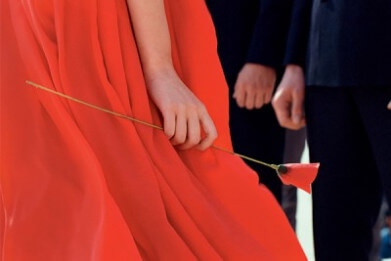
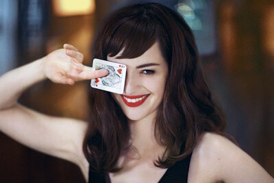
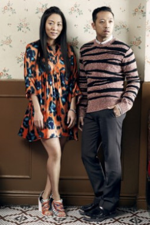
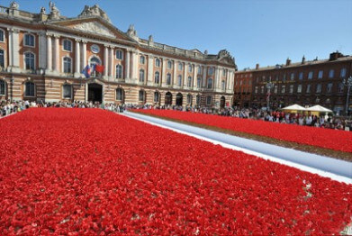
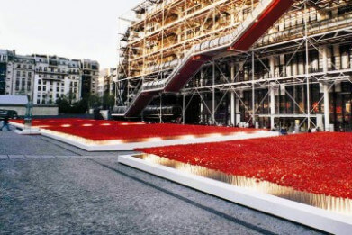

世界无限美好…Kenzo在20年的设计历程里，
一直践行着自己最爱的格言。
这是一份积极的承诺，一位智者的誓言。
秉承着这样疯狂的梦想，
Kenzo在充满诗意的别树一帜中，
如王者睥睨这个世界。
一直践行着自己最爱的格言。
这是一份积极的承诺，一位智者的誓言。
秉承着这样疯狂的梦想，
Kenzo在充满诗意的别树一帜中，
如王者睥睨这个世界。
2016
每一天重新发现爱。这款全新香氛彰显女性魅力，尽显性
感本色，展示了爱慕游戏的神秘
诱惑。 一份对爱的诱惑的无声赞
美，让你也不禁想一路同行。
2015
自2000年起，Patrick Guedj便开始担任KENZO所有的香水广告、产品
摄影及宣传影片的所有设计工作。
在Patrick Guedj的艺术作品的引领
下，我们踏上一场让人惊喜的感官
之旅。 多样的创作手段，让他充分
展现了那敏锐的、充满诗意、仿若
与生俱来的严苛艺术风格，世人仿
佛亦能通过他的作品感知那份真实
与自在。

2014
每一天重新发现爱。这款全新香氛彰显女性魅力，尽显
性感本色，展示了爱慕游戏的神秘
诱惑。 一份对爱的诱惑的无声赞
美，让你也不禁想一路同行。

2011
2002年，Carol和Humberto共同创办了美国潮店“开幕式”（Opening
Ceremony），于2011年成为
KENZO品牌创意总监。
他们被KENZO精神深深吸引，也将
这份精神当做一种生活方式。自
此，这个来自巴黎的品牌与二人的
无限创意深深融合，为KENZO品牌
注入新的活力，再谱新篇章。
从一开始，他们便毫不犹豫地融合
品牌以往的时尚风格，设计全新创
意元素，志在带来全新的活力、创
意和乐趣。

2008
« 十七岁的年华是浪漫的»（Rimbaud）。 二十岁不也同样
如此！？ 二十岁的年华浪漫依旧！ 为了庆祝
花样年华香氛诞生二十周年，
KENZO在蒙马特爱丽舍举办« 花之
力量 » 派对。
2006
为庆祝Kenzoamour爱慕系列香水的诞生，Kenzo举办一场民谣音乐
会。
一场为庆祝KENZOAMOUR爱慕系
列香水诞生的Coco Rosie音乐会在
巴黎Cabaret Sauvage音乐厅拉开
帷幕。这是一款独特的香氛，表达
了爱侣东方之旅那具有诗意之美的
美好意境。
2005
“感官国度之旅。” 这本画册叙述了KENZO构筑的感官世界。
这本画册叙述了KENZO构筑的感官
世界。自由摄影项目“感官国度之旅”是对Kenzo十二款香氛构筑的多彩世界的完整展示。
2003
众多城市都追随着巴黎的脚步。布宜诺斯艾利斯、伦敦、维也纳…甚
至是莫斯科的红场亦盛开了自己的
poppy花田。
6月27日这一天，梦想成为现实。
继巴黎、伦敦、米兰、维也纳、新
加坡、布宜诺斯艾利斯之后，
KENZO在莫斯科红场“种植”了250
000株poppy花，并赠送于往来的行
人。
2001
巴黎的中心，蓬皮杜艺术中心前，“种植”着150 000株poppy花。
在这片壮美的poppy花田，一场声
势浩大的赠花行动如火如荼，几分
钟内poppy花被赠送一空，唯留碧
蓝的天空和欢笑的孩童。



2001
KENZOKI，让肌肤护理充满感官享受，当初那棵美的种子已然成长为
一颗参天大树，为世人提供美的庇
护。
在护肤领域，KENZO自有独特理
念。KENZOKI运用亚洲植物精萃,
倾力打造非凡的质地、怡人的芬
芳，兼具美和愉悦享受。充满感官
享受的肌肤护理，尽在非凡
KENZOKI。

2000
poppy花本无味， 是KENZO赋予了它全新香气。城市之花，傲然独
特，纤细而坚强。poppy花本无
味，是KENZO赋予了它全新香气。
经典独特的优雅花香，
FLOWERBYKENZO一经推出便获
得了巨大的国际认可。
2000
充满活力的广告短片，KENZOJungle发布倾情巨献。大胆无畏，
一路向前。 一款略带辛香的浓烈香
氛，一款以金象为主题的非凡香
氛，激发你的无限想象…KENZO香
水总是给人惊喜，以最为意想不到
的方式给你全新感受。
1996
充满活力的广告短片，KENZOJungle发布倾情巨献。
大胆无畏，一路向前。 一款略带辛
香的浓烈香氛，一款以金象为主题
的非凡香氛，激发你的无限想象…
KENZO香水总是给人惊喜，以最为
意想不到的方式给你全新感受。

1991
KENZO香水在首款男士香氛中挑战传统法则，以独特嗅觉体验实现锐
意革命。
KENZO首款男士香氛KENZO
HOMME蓝色海洋男士香氛大胆采
用海洋香调。掀起了香水界的全新
革命。标志性的深蓝色竹节亦成为
永恒的经典…
« 这是一场静止的心灵之旅，清新
的海洋调让你不禁将目光投向无垠
的
1988
成功给了KENZO飞翔的翅膀， 催生了首款香氛，塑造了品牌精髓。
Kenzo，塑造了全新的KENZO。一
枝花静静地搁放于一颗水晶石…自
然、诗意、创意，这就是KENZO之
本，“KENZO， 如此之美”。她的品
牌理念不言而喻。« 一场永久的革
命 » （Kenzo Takada于法国电视国
际5台的发言）
1970
年轻的设计师来到时尚圣地巴黎，挑战时尚法则，在自己的设计中充分
展示无忧无虑的快乐本质。

史，他的成功，对整个时尚界而言
无疑都是一个巨大震动。他的时装
设计线条简洁、色彩丰富、搭配新
奇，他的模特在T台上放松惬意，悠
然享受。这在整个时尚界无一不彰
显着首开先河的新奇。 « 时尚新观
点 » （vogue法国版）